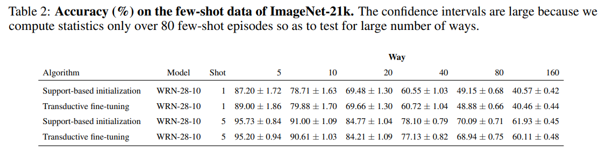

A BASELINE FOR FEW-SHOT IMAGE CLASSIFICATION
https://openreview.net/pdf?id=rylXBkrYDS
总结
使用简单的交叉熵loss对于深层网络做fine-tune是一个有效的few-shot的baseline。使用transductive fine-tuning可以使网络显现出和现有的SOTA一样甚至更好的效果。
Problem definition
- Support Set:$D_s$——k-way N-shot
- Query Set:$D_q$——k-way
- Meta-training Set:$D_m$——用于提前训练的较大数据集
分析得到用于$D_s$与$D_q$的分类器形式为:

使用$D_m$来训练出用于$D_s$与$D_q$的模型。
Approach
最简单的meta-training形式就是用交叉熵loss来预训练，即:

使用梯度下降算法来降低loss。
如果few-shot训练按照上一章中(4)式的形式进行，那么优化与上述(5)式相同，相当于对预训练模型进行微调。
需要修改模型以考虑新类别，谨慎的初始化可以使这个过程更有效率
Support-based initialization
在backbone后加入一层FC“分类层”，以backbone的logits为输入预测labels。ReLU非线性化表示为$(\dot)_+$。
对于单个support sample$(x,y)$而言，交叉熵中的第一项为$w_y$和$z(x;\theta)$之间的cosine distance，如果这两者均归一化为$l_2$范数且$b_y=0$，可以推出式(6)
在归一化为$l_2$范数之后，显然$w_y$和$z(x;\theta)_+$之间的cosine distance被最大化了。
对于多个support samples per class，在进行(6)式的$l_2$归一化前先对每个class中的$z(x;\theta)_+$取欧几里得平均，最后得到式(7)
其中$\Theta={\theta,\omega,b}$，在fine-tuning阶段均为可训练的参数。
Transductive fine-tuning
在式(4)中，我们假设只有一个query样本。 但是，我们也可以一起处理多个query样本，并对所有未知query标签执行最小化操作。因此为了获得一个峰值后验，或香农熵低的输出，我们提出一个正则化器如下所示：
Experimental results
使用WRN-28-10为backbone，使用基本的数据增强，使用包含label smoothing的交叉熵loss，no dropout，使用batch-nomalization，使用cyclic learning rates。
support-based initialization有时优于或可与最新算法相媲美，更大的backbone对于few-shot有着更好的处理能力。对于大型的backbone，即使标准的交叉熵pre-training和suppoer-based initialization都有着很好的效果。
在1-shot 5-way中，仅使用标记的support样例进行fine-tuning会导致轻微的初始化改进，有时会出现边缘退化的现象，但是对于5-shot 5-way而言，non-transductive fine-tuning比最新的技术更优。
在所有的设定中，transductive fine-tuning可以使1-shot 5-way的准确率比最新技术提高2-7%，在5-shot 5-way的设定中，除了Mini-ImageNet之外其他的均能提高1.5-4%。这显示出使用未标记的query样例对于few-shot至关重要。
在Mini-ImageNet, CIFAR-FS，FC-100数据集中，使用validation set中的额外数据来pre-train使结果提升了2-8%，这显示出更多的pre-training classes可以提高few-shot的效果，原因为这样可以获得一个更好的映射。

上表中显示了使用ImageNet-21k数据集对于大量新类别的few-shot任务进行训练及测试的结果。使用了7491个包含超过1000张图片的类别进行meta-training，以1-shot 5-way为例，在Tiered-Imagenet中准确率为72.87%，而这时的准确率为89%，显示出使用大量类别进行pre-training可能是一个高效的构建大量类别few-shot学习系统的方法。